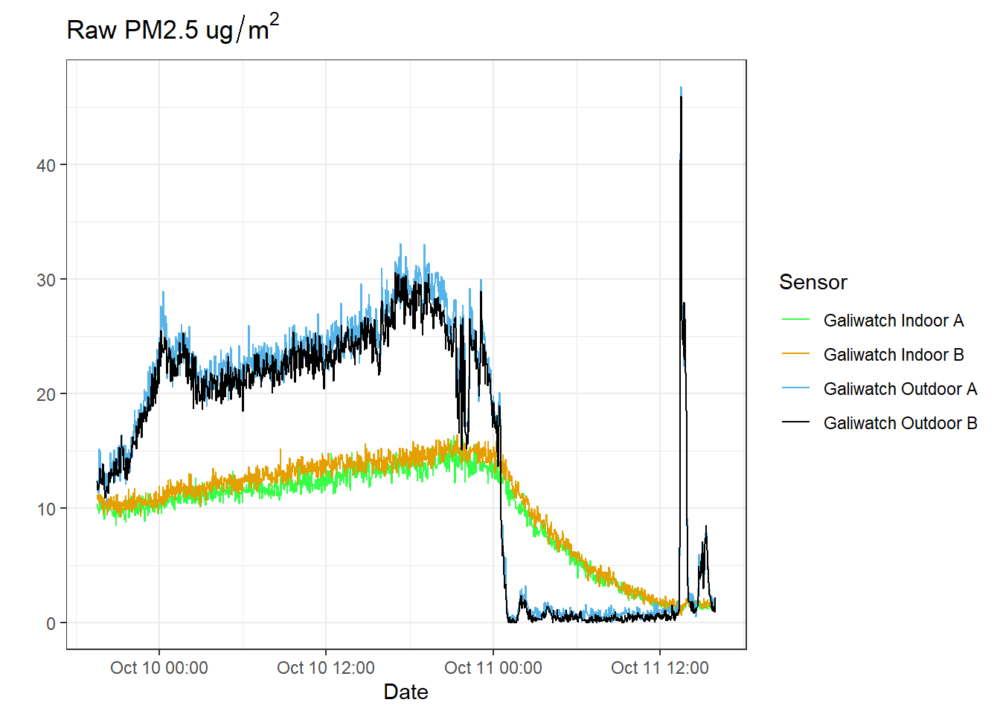
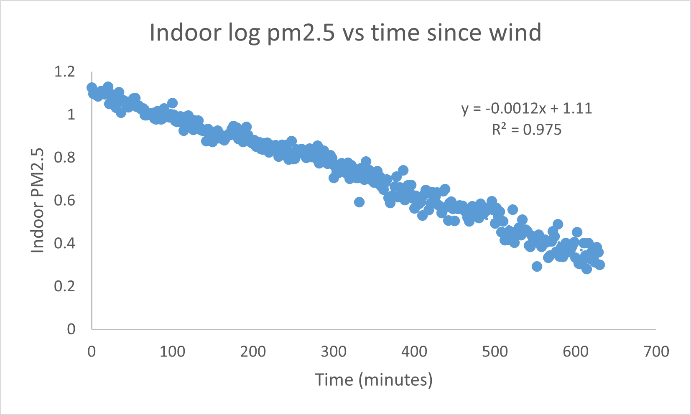
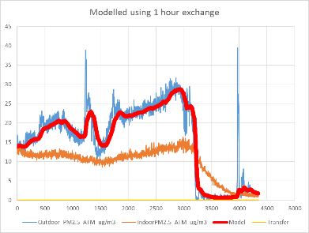
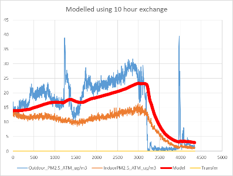
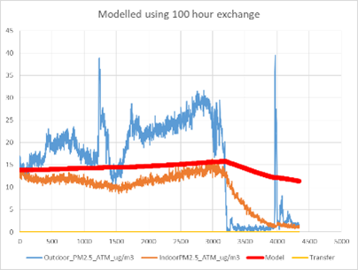
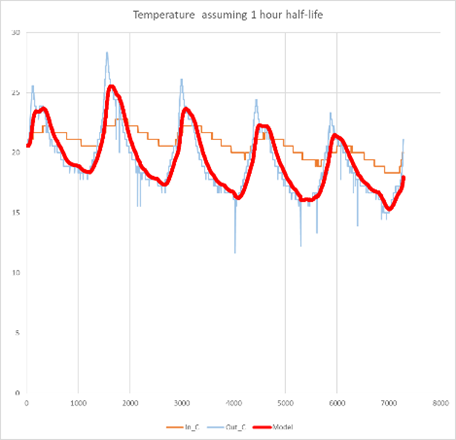
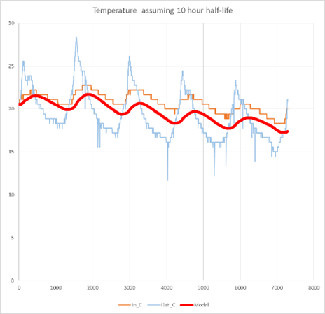
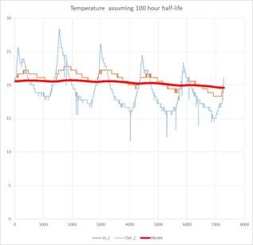

Indoor air replacement
climate
data analysis
Reading time: 3 minutes
Smokey air exchange
The air INSIDE our building changes more slowly than the air OUTSIDE. Last night there was a lot of smoke in the air until the afternoon, when it became very windy and the smoke was replaced with clean air from the north, such that the PM2.5s outside went from above 20 down to 1-2 in about 10 minutes. Let’s call this “almost instantly” (see Figure 1, blue line).
The PM2.5s inside the building then dropped in a nicely exponential fashion (gold line in Figure 1 above, or the blue line plotted on a log scale to the right), allowing us to estimate the half-time for replacement of the indoor air (Figure 2). The slope is -.0012, so the half-time for the replacement of the air inside the building was 577 minutes, or around 9.5 hours.

This seemed surprisingly FAST(!) since all the doors and windows were closed and there was no one at the building and no ventilation. However, the EPA standards for building ventilation recommend 0.35 air changes per hour for residential buildings, or turnover every three hours. However, that is for places with active air exchange, rather than just leaky doors, windows and walls. This air turnover rate of ~9.5 hours is for when it is VERY WINDY, and probably the actual turnover on normal days is quite a bit less.
Assuming air exchange with a half-life around 10 hours also lets us create a model (red line in figure Figure 4) of both the actual indoor PM2.5 and the temperatures as a function of the outdoor values. Actual indoor values are shown in orange and outdoor in blue. Over a larger timeframe of three days (4500 minutes), the fit of the PM2.5 is not great (see Figure 4, middle panel), suggesting that the wind-assisted value we calculated might have been a bit too fast for when it is not windy (which started around at the 3000 minute mark).



However, this is much better than an indoor PM2.5 model assuming exchange of 1 hour (the indoors would look like the outdoors) or 100 hours (indoor would be almost independent of outdoor), so we are in the right order of magnitude.
Temperature
As another “reality check” we can also make the same simple exponential model of indoor temperature as function of outdoor temperature. Once again, assuming a half-life of around 10 hours gives us a reasonable reflection of the outdoor value, whereas the 1 hour and 100 hour half-lives are plainly unreasonable.



Conclusions
Using an estimated air exchange of 10 hours gives reasonable approximations of indoor PM2.5 and temperature, suggesting that air exchange is driving both, which makes sense. Probably we have discovered the value of insulation.